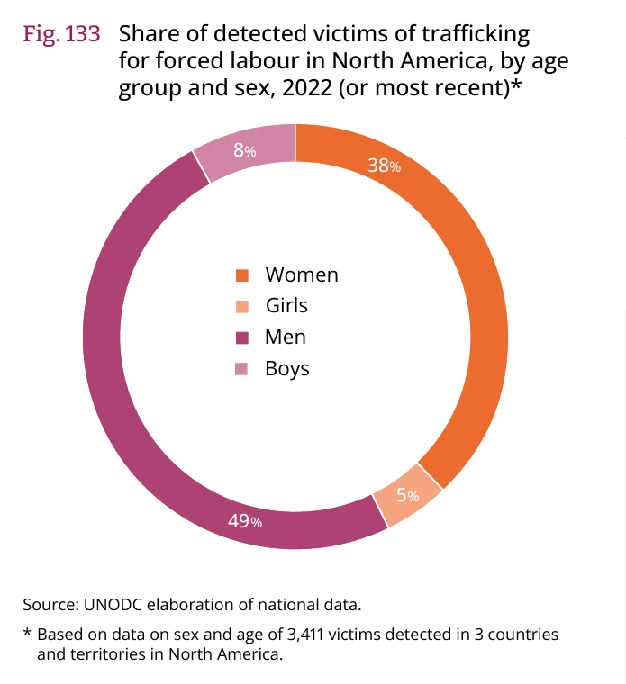

Share of detected victims by trafficking flow (domestic vs cross-border). UNODC GLOTIP 2024, Fig. 65 | Date: Dec 2024. Domestic, within-subregion, within-region and trans-regional shares. Detected victims; domestic trafficking needs no border crossing Source: https://www.unodc.org/documents/data-and-analysis/glotip/2024/GLOTIP2024_BOOK.pdf

Share of detected victims of trafficking in North America by region of citizenship. UNODC GLOTIP 2024, Fig. 133 | Date: Dec 2024. Victims who are nationals vs from Central America, South America, East Asia etc.. Detected victims; UNODC says 75% of North American victims were trafficked domestically Source: https://www.unodc.org/documents/data-and-analysis/glotip/2024/GLOTIP2024_BOOK.pdf